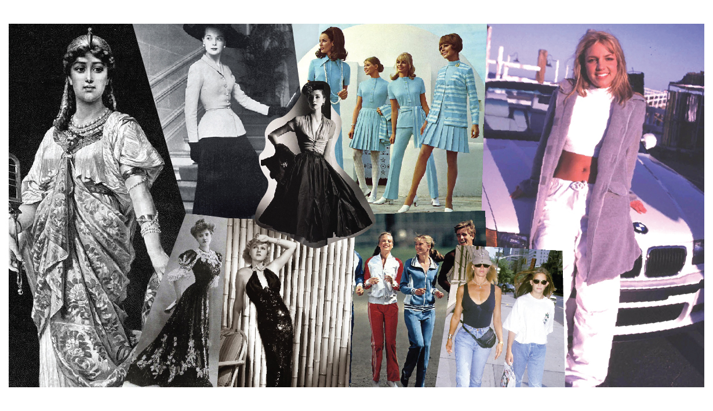

|  | แฟชั่นหรือสมัยนิยม (อังกฤษ: Fashion) ราชบัณฑิตยสถาน นิยามว่า "สมัยนิยม, แบบหรือวิธีการที่นิยมกันทั่วไปในชั่วระยะเวลาหนึ่ง" เป็นการยอมรับจนเกิดเป็นค่านิยม มีกระบวนการเกิดภาษาใหม่ ซึ่งเป็นช่วงเวลาหนึ่งเท่านั้น |
|---|---|
ประวัติสื้อผ้าเครื่องนุ่งห่มเป็น 1 ในปัจจัย 4 ที่มุนษย์ต้องการในการดำรงชีวิตเพื่อปกปิดร่างกายและให้ความอบอุ่น ความเจริญของมนุษย์ทำให้เสื้อผ้าและเครื่องแต่งกายเปลี่ยนแปลงไปตามยุคสมัย เสื้อผ้ายังบ่งบอกถึงลักษณะของผู้สวมใส่ได้ด้วย เช่น ฐานะ, เชื้อชาติ, ฯลฯ การพัฒนาของแฟชั่นในแต่ละยุคสมัยแตกต่างกันมาก ขึ้นอยู่กับปัจจัยหลาย ๆ อย่าง เช่น การเมือง เศรษฐกิจ ภูมิอากาศ ฯลฯ ในคริสต์ศตวรรษที่ 20 แฟชั่นโลกเปลี่ยนแปลงไปอย่างเห็นได้ชัดเจน โดยเฉพาะปี ค.ศ. 1920 - 1930 หรือเรียกว่ายุค แฟลปเปอร์ (Flapper) ผู้หญิงสวมกระโปรงสั้นเป็นครั้งแรก และหลังสงครามโลกครั้งที่ 2 ในสภาวะเศรษฐกิจตกต่ำ ผู้หญิงต้องออกจากบ้านเพื่อทำงานหาเลี้ยงชีพ ดังนั้นเสื้อผ้าที่สวมใส่ย่อมเปลี่ยนไปเพื่อเอื้อประโยชน์ในผู้สวมใส่มากขึ้น กางเกงจึงเป็นที่นิยม ตั้งแต่ยุคแฟลปเปอร์เป็นต้นมา แฟชั่นของโลกได้ก้าวเข้าสู่ความเป็นสากล เพราะการติดต่อสื่อสารของโลกตะวันตกและตะวันออกเป็นได้เปิดกว้างมากขึ้น มีการไปมาหาสู่กัน แฟชั่นของโลกตะวันตกจึงเข้ามามีบทบาทกับโลกตะวันออก เช่น คนไทยรณรงค์ให้สวมหมวก หรือ ผู้หญิงไทยเลิกสวมโจงกะเบน เพื่อความเป็นสากล ลักษณะหรือแบบแผนของเสื้อผ้าเครื่องแต่งกายของแต่ละยุคสมัย เรียกว่า สไตล์ (Style) แต่ละคนมีสไตล์การแต่งตัวไม่เหมือนกัน เช่น บางคนชอบแต่งตัวสไตล์ พั้งค์ (Punk) หรือเด็กสาว ๆ ชอบสไตล์เซ็กซี่ ที่ฝรั่งเรียกว่า ราซี่ (Racy or Provocative) ส่วนคำว่า เทรนด์ (Trend) คือ แฟชั่นล่าสุดที่กำลังเป็นที่นิยม สไตล์การแต่งตัวสามารถจำแนกได้เป็นประเภทนับไม่ถ้วน ต่อไปนี้เป็นสไตล์เด่น ๆ หลัก ๆ ที่เป็นที่นิยมในอดีตจนปัจจุบัน บางสไตล์ถือว่าล้าสมัยไปแล้วในปัจจุบัน บางสไตล์ถือว่าเป็นคลาสสิก เพราะแต่งเมื่อไร ก็ไม่ถูกมองว่าเชยหรือตกรุ่น อย่างไรก็ตามยังมีบางสไตล์ที่เคยล้าสมัยไปแล้วอาจเวียนกลับมาเทรนด์อีกครั้ง
แฟชั่นยุคอียิปอุตสาหกรรมแฟชั่น |
|
|
|